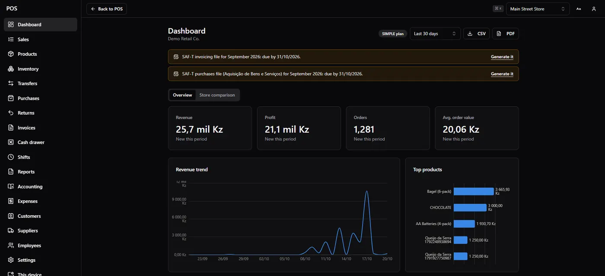
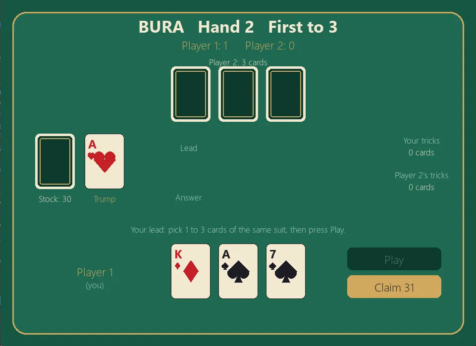

Diverse maximum cuts in planar graphs
Co-led with Mikhail Tyrin.
The problem: find several maximum cuts of a graph that are as different from each other as possible.
Not published yet. Results and links will be added after publication.
I'm building a point-of-sale platform for shops, and researching diverse solutions in combinatorial optimization at MIPT.
6 shared edges of 18A–B differ by 6A–C differ by 6B–C differ by 6
Three spanning trees of one graph, chosen so that every pair differs in as many edges as possible. What this is
Click empty space to add a vertex, two vertices to join them, or an edge to remove it.
Founder. I designed and built every feature.
A cloud platform that runs a shop, whether it has one store or several. Cashiers sell from a till app that keeps working when the internet drops. Owners and managers use a back office in the browser to manage products and stock across stores, buy from suppliers, handle returns, run shifts and staff, and see how each store is doing.
The back office (dashboard, reports, products, settings) is a React app that talks to the same server from any browser.
Every invoice has to be numbered and signed, and each signature includes the one before it. If only the server could do that, a till would stop selling the moment the internet dropped.
I solved this by letting each till issue invoices on its own. It keeps its own numbered series, signs each sale as it happens, queues it, and uploads it when the connection returns. The server then checks the whole chain and flags anything that doesn't fit, such as a missing number or a bad signature, so a sale made offline is as trustworthy as one made online.
The signing key reaches a till only when the owner registers it with a single-use code. Windows keeps the key encrypted, and it is deleted if the till's access is withdrawn.

All screens show a demo store with generated data.
Not yet launched.
Supervised by Danil Sagunov at MIPT. Both projects started at LIPS 2026, MIPT's summer research programme, and were presented at its conference.
An optimization problem usually asks for one best solution. Its diverse version asks for several good solutions that differ from each other as much as possible, so the person choosing among them has real alternatives.
For spanning trees, the distance between two trees Ti and Tj is the number of edges in one but not the other. The task is to find k spanning trees of a graph whose smallest pairwise distance is as large as possible. The demo at the top does this for k = 3 with a simple local search: a greedy start, then edge swaps, then restarts. On 365 small graphs it matched the optimum found by exhaustive search. On larger graphs it comes with no guarantee. It is not the method from the paper; the demo will switch to that method once the paper is published.
Co-led with Mikhail Tyrin.
The problem: find several maximum cuts of a graph that are as different from each other as possible.
Not published yet. Results and links will be added after publication.
Yan Drozhetsky, Ahmed Ghaben, Mikhail Kurs.
The problem: find several bases of a matroid, spanning trees being the best-known case, that are pairwise as far apart as possible.
Not published yet. Results and links will be added after publication.
Two more projects. Everything else is on GitHub.
Co-developer with Oscar Prada, 2025. Python. Source
A Telegram bot that tracks a user's income and spending, suggests what to save, and hands a trading budget to an automated trading engine. I built the finance engine, the bot's commands and conversation flows, the link between the bot and the trading engine, and the trade reports. Oscar wrote the trading engine, which runs an EMA crossover strategy on Binance and OANDA data.
The strategy was a practice exercise, so the panel below doesn't use its results. Instead, it shows how the size of each bet changes growth and risk for a strategy with a known edge.
Each simulated trade wins with probability p and pays b times the stake, or loses the stake. Every trade risks the same fraction f of current equity. The Kelly fraction f* = p − (1 − p) / b maximizes long-run growth. The starting values are assumptions, not measurements from the bot.
The simulation runs in your browser when this panel scrolls into view.
Solo. Python, Pygame, pytest. Source
Bura, a Russian trick-taking card game, in Python. Play against a computer opponent at several difficulty levels, against an AI opponent, or against a friend on the same screen. The rules engine is kept apart from the interface and covered by tests.

I'm looking for internships in quantitative research and software engineering.
Moscow, Russia. © 2026 Ahmed Ghaben.